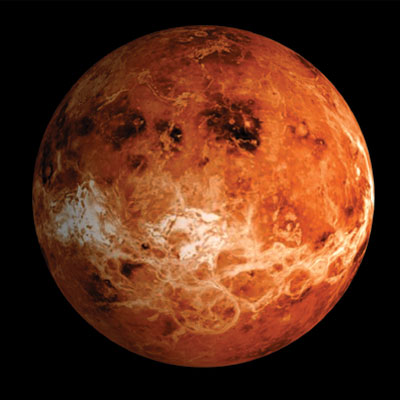
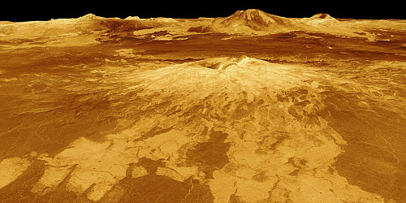

Es el segundo planeta del Sistema Solar y el más semejante a La Tierra por su tamaño, masa, densidad y volumen. Los dos se formaron en la misma época, a partir de la misma nebulosa.
Sin embargo, es diferente de la Tierra. No tiene océanos y su densa atmósfera provoca un efecto invernadero que eleva la temperatura hasta los 480 ºC. Es abrasador.
Los primeros astrónomos pensaban que Venus eran dos cuerpos diferentes porque, unas veces se ve un poco antes de salir el Sol y, otras, justo después de la puesta.
Venus gira sobre su eje muy lentamente y en sentido contrario al de los otros planetas. El Sol sale por el oeste y se pone por el este, al revés de lo que ocurre en La Tierra. Además, el día en Venus dura más que el año.
La superficie de Venus es relativamente joven, entre 300 y 500 millones de años. Tiene amplísimas llanuras, atravesadas por enormes rios de lava, y algunas montañas. Foto 3
Venus tiene muchos volcanes. El 85% del planeta está cubierto por roca volcánica. La lava ha creado surcos, algunos muy largos. Hay uno de 7.000 km.
En Venus también hay cráteres de los impactos de los meteoritos. Sólo de los grandes, porque los pequeños se deshacen en la espesa atmósfera.
Las fotos muestran el terreno brillante, como si estuviera mojado. Pero Venus no puede tener agua líquida, a causa de la elevada temperatura. El brillo lo provocan compuestos metálicos.
| Distancia desde el Sol: | 108.200.000 km |
| Radio: | 6.052 km |
| Superficie: | 460.234.317 km² |
| Masa: | 4,867E24 kg (0,815 Masa terrestre) |
| Duración del día: | 116d 18h 0m |
| Gravedad: | 8,87 m/s² |